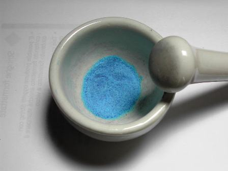
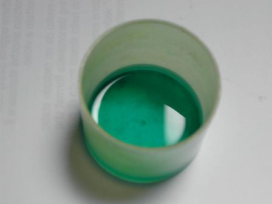
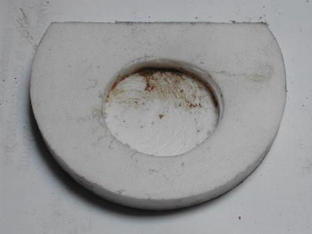
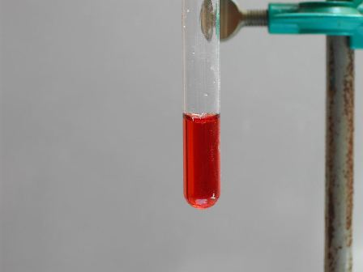
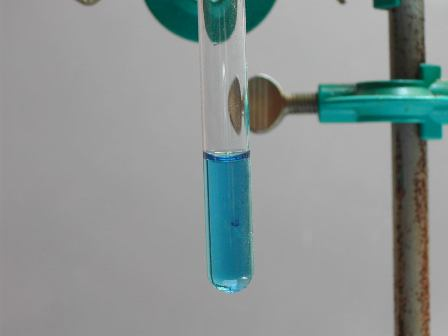
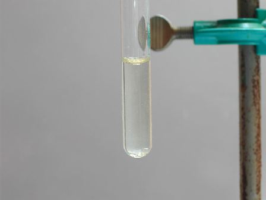
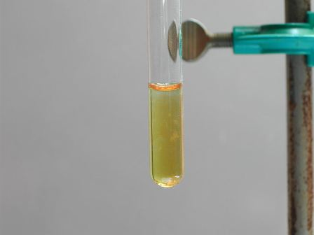

Segue dalla puntata precedente.
Dobbiamo cercare di scoprire se il colorante blù di alcuni granelli di silice è organico o inorganico e l'eventuale catione.
Se completamente organico, dopo opportuno trattamento sarà distrutto e in ogni caso non residuerà sali metallici.
Se inorganico, o organico coordinato con ioni metallici, residuerà appunto un composto del catione.
Mano alla vetreria!
Macino finemente i 5 g di granelli blù e li tratto in un recipiente di polietilene resistente all'acido fluoridrico con 20 ml di HF al 40%: la reazione (da farsi ovviamente in ambiente idoneo; io in questi casi mi metto comodamente all'aperto) è subito molto vivace ed in poco tempo tutto il prodotto è perfettamente sciolto; prendo atto che la colorazione è verde ma non ancora significativa.
I gr


Allontano a questo punto tutto il silicio per ebollizione prolungata a bagno maria e ottengo un concentrato con ancora molto HF in eccesso, nella soluzione più altobollente di 100°.
Voglio tirare tutto a secco, come fare? Non potendo adoperare per ovvie ragioni oggetti in vetro (nè tantomeno crogiolini in platino!), preparo per l'occasione un piccolo evaporatore in teflon fresandone una cavità in un pezzetto di questo materiale; il teflon può essere riscaldato anche ad alta temperatura e resiste perfettamente all'acido fluoridrico.
Penso anche che questo estemporaneo oggetto potrebbe tornar utile in future occasioni e quindi lo faccio seduta stante!
Lo si può vedere nella foto, con la soluzione verde che si sta concentrando.

Una volta arrivato a secchezza... sorpresa, ecco il risultato! Un bel po' di mg di residuo perfettamente gestibili, ma non di un bel colore azzurro come mi sarei maggiormente aspettato, bensì di un sospetto color ruggine.

Non sarà mica ferro anche stavolta! (ormai il ferro mi sta stufando quando salta fuori mentre mi aspetto altri elementi!).
Preparo una soluzione cloridrica del residuo (indovinate di che colore... gialla!) e testo il cobalto con il saggio di Vogel, cerco il rame con il saggio all'etilxantato e... non mi resta che confermare il ferro con le solite prove che abbiamo visto troppe volte.
Mannaggia, tutte negative tranne quella del ferro, positivissima!


Test con tiocianato - Test con ferrocianuro


Test con K etilxantato - Test con tracce di rame aggiunte
Conclusioni
Nè rame nè cobalto ci sono in quei granelli, almeno non nelle quantità umane che un'analisi di tipo classico può svelare.
Ferro ce n'è infinitamente troppo perchè derivi dalle modalità analitiche, quindi ritengo che sia proprio quello l'elemento cromatico del gel di silice.
Altri elementi (se non eventualmente in tracce) li escluderei a priori.
Chissà quale prodotto cinese a base di ferro, forse ftalocianine o qualcosa di simile?
Non ne ho la più pallida idea e nemmeno trovo niente al riguardo in bibiografia.
Ma almeno sono riuscito (salvo impreviste cantonate...) a smascherare l'innocuo catione!
Naturalmente io ho analizzato IL MIO gel di silice, presumendo che corrisponda in linea di massima a quello che comprava Teresa.
Io la mia parte l'ho fatta; nel frattempo il gatto è stato alloggiato a fare i suoi bisognini in maniera diversa, se con minore o maggiore soddisfazione questo non lo so.
Di una cosa sono sicuro: al micio non gliene sarebbe potuto fregar de meno delle mie fatiche.
16 commenti